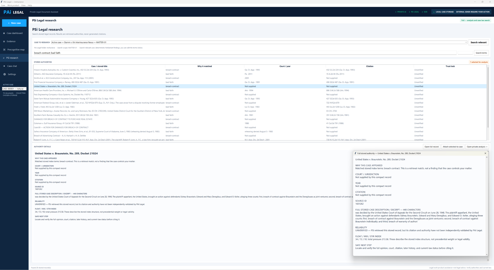

Private legal case management and insurance claim software for Windows — on-premises, matter by matter
PAi Legal
For firms and for the self-represented. Index, organize, build the case.
Turns AI from your biggest liability into one of your biggest assets — because here it is never the thing deciding what is real. The record decides. The AI only puts it in words, and every word traces back to a source you can open.
- Drop in complaints, answers, motions, depositions, exhibits — OCR makes every word searchable
- Separates what is alleged from what is actually supported — everything enters low and is promoted only when it earns it
- A Parliament builds the relational case map — claims, facts, evidence, authorities and open issues, tied together
- Deterministic analysis runs first; the AI only phrases the result
- Checks your computer, recommends a model that fits, and lets you pick — or export a brief and use your own frontier API key
- Ask questions of your own file, with every answer traced to its source
- Names the missing element of each claim — and marks what you only asserted in your own filing
- Separates multiple matters inside one folder, and says which are actually filed with a court
- A button on screen switches the whole interface between attorney and plain language — any time, mid-case
- Every matter lives in its own folder, drive or jump drive — nothing pools, nothing crosses
- Installs on machines the firm controls; no per-seat cloud subscription, no client data leaving the building
- Add PSi Legal and it suggests which cases to look up — 5,449,347 indexed records, or your firm's own library
- Add-on: PSi Legal indexes your own full library and PAi Legal reads from it
Free download. First case free.Paying starts a new case — it never unlocks one you already have
Get PAi Legal Everything it doesPAi Claims
Photograph the damage. Get paid for it.
- Add pictures of the damage and the software builds the claim around them
- Writes the estimate with regional pricing and Xactimate-style line items
- Drafts the demand letter and the supporting exhibit index
- Every line is checkable against pricing data and real case law
- The more paperwork you add, the stronger the claim gets
- Gets sharper with every claim you run — carrier conduct, pricing and scope patterns carry forward
- Converts cleanly into a court filing if the carrier will not move
- Private AI included and set up for you, or bring your own API key
Free download. First claim $20.Single claim after that $179 · annual access $2,000
Get PAi Claims What it doesNo lawyer? Start here.
If you are fighting this yourself, you do not need to learn what a pleading is first. Put your papers in, press the plain-language button, and the software tells you what your case is claiming, what your documents actually prove, and — the part nobody tells you until it is too late — which things you have only said in your own filing without proof to back them.
It will not soften a gap to be nice about it. Being told what is missing before a judge tells you is the whole reason to run it.
If you are representing yourselfStart here instead if that is where you are: served with a lawsuit · a denied insurance claim
One button, and the software becomes a different product
A control sits on screen at all times: attorney, or plain language. It is not a checkbox that dims a few menus and it is not a setup question you answer once and live with. Hit it and the vocabulary, the reading order, the explanations and the way a gap is described all change — mid-case, mid-sentence, as often as you like.
Attorney
Operative pleading, responsive pleading, controlling authority, elements and burdens. Findings stated in the terms you would use in a memo, with the analysis exposed and nothing narrated at you. It assumes you know what a motion in limine is and does not stop to say so.
Representing yourself
Your main court filing that starts the case. The other side's written answer. Something the judge decided. The same engine, the same findings — narrated in order, with each gap named as a specific errand: you still need proof of what it cost you, and here is where you asserted it without proof.
Which means it is also a client-facing tool. A client is sitting across the desk asking what any of this means — press the button, turn the screen around, and walk them through their own case in words they can follow. Press it again when they leave. The case exports in either voice too, so a status letter is a file rather than an evening.
Nothing is withheld from either one. The self-represented mode is not a trial version and it does not soften a finding to be kind — a gap stays a gap, because being told what your case is missing is the entire point of running it before you file. What the plain-language mode does.
Two programs, opposite rules — and that is deliberate
Claims work and litigation work do not have the same relationship to a prior file. One benefits from everything you have seen before. The other is ruined by it. So the two programs are built to opposite standards, and the seam between them is guarded.
PAi Claims accumulates
A claim file is an argument about scope, pricing and carrier conduct, and those patterns repeat. What you established on the last roof — how a carrier treats matching, where labor depreciation gets shaved, which pricing positions survived — carries forward into the next one. The software gets better the more claims it sees, and that is the point of it.
PAi Legal isolates
A matter is not improved by another matter. Every case sits in its own folder or its own jump drive with its own index, its own analysis and its own authorities. Nothing pools into a shared brain, nothing bleeds across a wall, and there is no shared store that a second client's file could reach into.
The seam between them is guarded
When a claim file moves into PAi Legal, PAi Legal never rewrites the Claims record. The Claims graph stays the base record; Legal builds an overlay beside it and writes its own separate extension graph. The handoff is refused outright unless the files match — same persisted revision, matching file hash, marked ready — and Legal re-hashes the base graph after linking to prove it did not touch it.
Nothing is silently upgraded by the move either. Every fact crosses carrying its own Trust Lock and its full promotion history, enters ranked below the controlling court documents in the new matter, and any conclusion the Parliament then draws on top of it starts unverified and is recorded as the Parliament's own work, with the source untouched.
The AI is never the one deciding what is real
That is the whole trick, and it is why the AI here is an asset instead of a risk. Facts come out of your documents. Authority comes out of an index of stored legal records, each retrieved with its source id. The finding is computed from that record, the same way twice. The model arrives last and does one job — saying it in readable English. It is never asked to remember a case, judge a case, or fill a gap, so it has no opening to invent one.
And it is not trusted to follow that instruction. Anything the model writes is re-checked and re-marked by the software before you see it: a claim it tried to present as independently validated is compared against the actual validated inputs and demoted unless it aligns with one exactly. Prose it produced on its own authority is marked speculative on its face. The model cannot award itself credibility, so a jailbroken or confused model degrades into visibly-unverified text rather than into a confident wrong answer.
None of this is training data
The cases are not inside a model. Nothing was fine-tuned on them, nothing memorized them, and no model is asked to remember a citation. The corpus sits on your disk as an index of records, and the software goes and gets the record. That one difference is why the software cannot hand you a case that does not exist.
A model trained on case law
Learns what a citation looks like. When it has no real answer it produces something citation-shaped — right reporter, plausible year, wrong universe. Ask it twice, get two answers. Nobody can say where either came from.
An indexed corpus with provenance
Holds actual records with source ids. A result is a row that was retrieved, or there is no result. Ask it twice, get the same rows, with a replay signature proving it. Unverified records say unverified on their face.
Three hundred copies of one press release is still one source
This is the part that is genuinely new. Ordinary search — and every vector database under a chatbot — scores text by how similar it looks to your question. Syndicate one unverified claim across three hundred sites and that search reads three hundred agreements. It ranks the loudest thing, not the best-supported thing.
The engine underneath PAi Legal and PAi Claims scores relational pressure instead: how many independent origins a statement actually traces back to, with each additional copy from the same origin worth steadily less. Three hundred echoes collapse to one root. Three separate courts reaching the same holding outrank all three hundred. Contradicting sources push back rather than being averaged away.
Pressure measures attention, not truth. A claim getting loud can never promote itself to verified — that gate is held separately, on purpose.
The finding is computed from the record, not sampled from a model. The AI phrases the result; it does not decide it, and the feature still works with no model installed.
Sub-millisecond scoring on an ordinary machine. No second model grading the first one, no per-token bill, no queue, no internet.
The scoring method — grammatical slot parsing plus logarithmic multi-root provenance — is filed as a patent application, not a prompt anyone can copy.
Every citation is retrieved, never written by a model
If the software shows you a case, that case exists, and you can open it. Nothing here invents authority to fill a gap.
- Air-gapped by refusal, not by policy
- Every internal endpoint must resolve to loopback or the app rejects it outright. No setting, environment variable or edited config can point it at a remote server, so a machine with the network cable pulled behaves exactly like one without.
- Retrieved, not generated
- Authorities come out of an index of stored legal records, each with a source id. A citation on screen is a record that was retrieved, not model output — and one you are told to verify against the opinion itself.
- Marked when unverified
- Records the software has not independently validated say so, in plain words, next to the result. You always know what you are standing on.
- Traced to the document
- Facts, allegations and pricing positions are built sentence by sentence from your own files, and each one points back to the page it came from.
- Replayable
- The analysis is deterministic. Same file, same result, with a replay signature — so what you show a judge is what the software produced.

From a shoebox of paperwork to a filing
PAi Legal does the four things a paralegal week is spent on, and does them in the order that keeps them honest.
Upload case files
PDFs, scans, emails, Office documents. Originals are preserved; the text index is derived and rebuildable.
Map the relationships
Parties, claims, facts, evidence, witnesses and authorities are connected and categorized.
Run the analysis
Rules, precedent, conflicts, elements and burdens are evaluated deterministically, with a confidence score.
Build the theory
Supported facts, key evidence, top authorities and unresolved issues, ready to draft from.
A denied claim should not cost you a third of the settlement
A public adjuster takes a percentage. A contingency fee takes more. PAi Claims costs $20 for the first claim because the point is to put a real, priced, documented estimate in the hands of the person whose roof it is. Snap the damage, add the policy and the carrier's letters, and the software builds the estimate, the narrative and the demand.
Add pictures
Snap the damage on your phone and drop the photos in. No forms to learn.
Software builds the claim
Scope, quantities, regional pricing and line items, with the paperwork attached to each.
Send the demand
A written demand letter with the estimate and exhibits behind it.
File if you have to
The same record converts into a court filing, with authority attached.
The AI is never the one deciding what is real.
Your case never leaves your computer, and neither does the answer.
Two Windows programs for people fighting a claim or building a case: PAi Claims turns photos and paperwork into a priced estimate and a demand letter. PAi Legal turns a folder of case files into a structured legal theory. Both run on your machine, against real case law.
5,449,347indexed records that tell you which cases to go read — plus every case you own
Describe your issue and PSi Legal comes back with the authority worth pulling, source id on every result. The same $30 a month indexes your entire library in house — every opinion, brief and prior matter you hold, on your own machines, no per-document charge and no upload. Rebuilt yearly.
20 milliondockets behind the PAi Claims authority corpus
Built from the full public court record, not scraped summaries. Every position an estimate takes — overhead and profit, matching, labor depreciation, ordinance and law, deductible application — points back to a real opinion you can pull and read. A court-verifiable estimate, not a generated one.
Turns AI from your biggest liability into one of your biggest assets
Right now AI is the thing a firm has to write a policy about: fabricated citations, sanctions, client files sitting on someone else's server, an associate who cannot say where an answer came from. Take away the one thing causing all of it — letting the model decide what is true — and what is left is the fastest reader the firm has ever hired, one that never gets tired at 2 a.m. and shows its source for every line.
The matter never leaves your building
Files, OCR text, indexes, notes and work product are written to the location the attorney picked and stay there. Anything that would leave requires an explicit action, and the software says so on screen.
Isolation you can point at
One matter, one folder or drive. Hand an associate the drive and they have the case and nothing else. Walling off a matter is a physical act, not a permission setting on somebody else's server.
Work product you can defend
The analysis is deterministic and carries a replay signature. Run it again on the same file and you get the same result, which is a different thing to show a court than a chat transcript.
Payment creates a case, never unlocks one
Starting a new matter is the only paid moment in PAi Legal. Opening, analysing, exporting and backing up an existing case never check. The research add-on is a separate subscription, and if it lapses you lose case-law search — never access to your own case files.
No per-seat meter
Free to download, first case free, then paid per matter or by the year. Costs scale with cases, not with headcount.
Your whole library, indexed in house
$30 a month covers both halves: suggestions from 5,449,347 indexed records, and every case the firm owns indexed locally into the same search — briefs, opinions, prior matters, however many. Nothing is uploaded and nothing is metered per document. PAi Legal works without it.
Conflict screening on every new matter
Party names are normalized and screened against your other matters when a case is created and on demand. It reports possible matches for human review and states plainly that it is not a conflicts clearance.
A sealed audit trail
Case events are written to an append-only chain, each record keyed and hashed to the one before it. Alter a line and verification fails and names the line. The key lives in the OS credential vault, not in the case folder.
Encrypted portable backups
A case exports to a single AES-GCM encrypted file with a manifest that hashes every document. Restore verifies each file against that manifest and refuses anything unmanifested, altered or unsafely pathed.
Filing preflight
Installed jurisdiction rule packs check a draft for mechanical omissions and privacy patterns, cite the rule behind each finding, and say what they are not: a preflight, never a legal-sufficiency determination.
Roles bound to Windows accounts
Owner, lawyer, paralegal, intake and auditor, each with its own permissions, tied to the signed-in OS account. The status screen states the limits of that rather than dressing it up as authentication.
Encryption you can require
A firm can set policy so no case is written to a volume that is not BitLocker-protected. Credentials live in the Windows DPAPI vault; plaintext never touches disk.
Runs on ordinary machines
Windows 10 or 11, CPU only. No GPU budget, no VDI project, no IT migration to approve first.
Questions people ask before they download
Can this software make up a court case?
No. Citations are retrieved from an index of stored case records with source ids. If there is no matching record, there is no result. The AI is never asked to produce a citation from memory.
Can one matter see another matter?
No. Each matter in PAi Legal has its own folder or drive, its own index and its own analysis. There is no shared store between cases. When a file comes over from PAi Claims, every fact is demoted and has to be re-established inside the new matter before it counts.
Do my case files get uploaded anywhere?
No. Both programs run on your Windows computer. Case files, OCR text, indexes and work product stay in the folder or drive you pick. Anything leaving the machine requires your action.
Is case law included?
No — PAi Legal is the case workspace and works on its own. Research is the PSi Legal add-on at $30 a month, rebuilt yearly, and it does two things: suggests which cases are worth looking up from 5,449,347 indexed records, and indexes every case your firm already owns into that same search, in house, with no per-document charge. It does not supply opinion text. If the add-on lapses, research stops; your cases still open, analyse and export.
What does it cost?
Both are free to download. PAi Legal's first case is free. PAi Claims is $20 for the first claim, $179 for a single claim after that, or $2,000 for a year.
Do I need internet or an API key?
No. A private model is downloaded and set up for you and runs locally. Your own API key works instead if you want it, but it is optional and off unless you turn it on.
Can I use it without being a lawyer?
Yes. A button on screen switches the whole interface between attorney terminology and plain language, any time you like. Attorneys use it too — press it when a client is in the room and walk them through their own case.
The rest of the line
PSi Legal corpus indexer, PAi LFM model loader, Libby's Mental Metals, and the PSi add-ons.